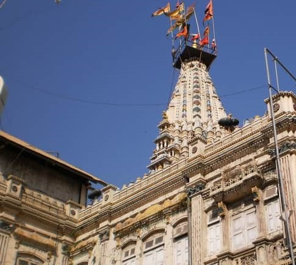

The Mumbadevi Temple
The Mumbadevi temple is one of the oldest temples in the city. In fact, Mumbai city derives its very name form the Mumbadevi temple. The temple is dedicated to Goddess Mumba who is said to be the patron goddess of the native Somvanshi Kshatriyas, agricultural communities and the kolis (Fishermen).